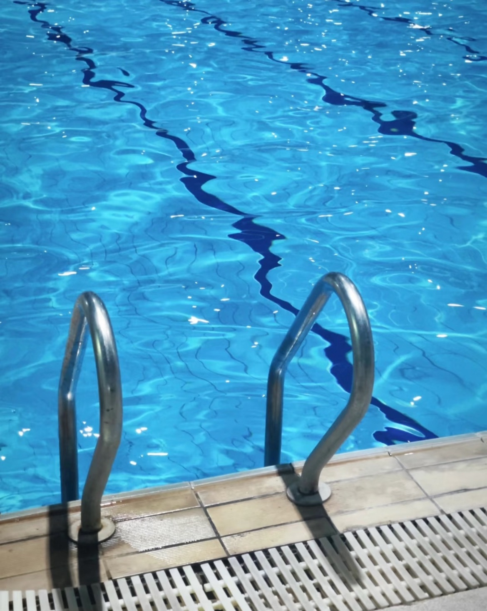
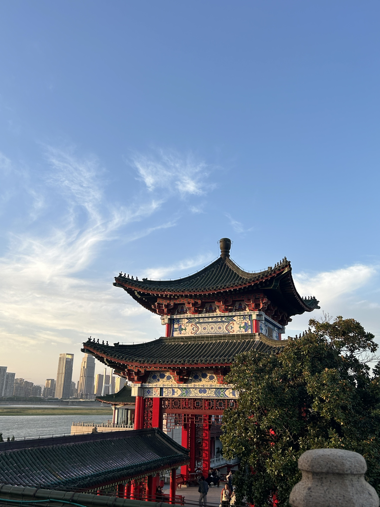

兴趣爱好

游泳
每当潜入水中，世界仿佛瞬间安静下来，只剩下水流轻柔的触感和自己均匀的呼吸声。
游泳对我而言不仅是运动，更是一种治愈和释放。双臂划开水面时，疲惫与压力随之消散；
蹬腿向前时，身体变得轻盈而充满力量。更重要的是，它教会我坚持与专注——在泳道中一次次突破自己的距离，
就像在生活中迎接每一个挑战。

旅游
旅行让我跳出日常的节奏，用双脚丈量土地，用双眼收藏风景。
它教会我拥抱未知——在异乡的晨曦中醒来，与不同文化相遇；
听当地人讲述故事，那些瞬间让我的视野变得开阔，内心也更
加丰盈。旅途中的偶遇常常成为珍贵的记忆，而克服路途上的小插曲，
则让我学会了从容与灵活。旅行是重新认识自己的方式。

阅读
阅读让我的生命得以无限延伸。它带我领略异国的风土人情，感受不同时代的悲欢离合，
甚至触碰人类最璀璨的智慧结晶。每本好书都像一扇窗，让我看到更广阔的世界；
又像一面镜子，照见内心最真实的渴望与困惑。在阅读中，我学会了思考，懂得了共情，
也找到了面对生活的勇气与智慧。阅读让我永远保持对世界的好奇与热忱。

画画
画画是我表达内心的秘密语言。当言语不足以描述感受时，色彩和线条就成了最好的倾诉。开心时，
笔下会流淌出明亮的色调；忧郁时，画纸便承载着深沉的笔触。这种无声的表达，让我的情绪有了安放的角落，
也让我在创作中不断遇见新的自己。画画不仅是一种爱好，更是我认识世界、理解自我的温柔方式。

跳舞
舞蹈赋予我的不仅是优美的体态，更是一种与自我对话的独特语言。在反复练习中，我学会了坚持与专注；
在舞台灯光下，我收获了自信与勇气。汗水浸透衣衫时，我懂得了付出的意义；而当身体终于完美诠释音乐时，
那种成就感无可替代。舞蹈让我明白：生命就该像一支舞，既有严谨的章法，也要有即兴的精彩。